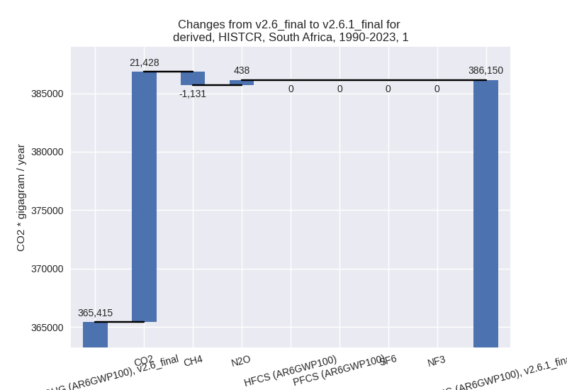

Changes in PRIMAP-hist v2.6.1_final compared to v2.6_final for South Africa
2025-03-19
Johannes Gütschow
Change analysis for South Africa for PRIMAP-hist v2.6.1_final compared to v2.6_final
Overview over emissions by sector and gas
The following figures show the aggregate national total emissions excluding LULUCF AR6GWP100 for the country reported priority scenario. The dotted linesshow the v2.6_final data.
The following figures show the aggregate national total emissions excluding LULUCF AR6GWP100 for the third party priority scenario. The dotted linesshow the v2.6_final data.
Overview over changes
In the country reported priority scenario we have the following changes for aggregate Kyoto GHG and national total emissions excluding LULUCF (M.0.EL):
- Emissions in 2023 have changed by 2.8%% (13280.65 Gg CO2 / year)
- Emissions in 1990-2023 have changed by 4.6%% (22080.29 Gg CO2 / year)
In the third party priority scenario we have the following changes for aggregate Kyoto GHG and national total emissions excluding LULUCF (M.0.EL):
- Emissions in 2023 have changed by -4.9%% (-28649.18 Gg CO2 / year)
- Emissions in 1990-2023 have changed by -4.1%% (-23854.77 Gg CO2 / year)
Most important changes per scenario and time frame
In the country reported priority scenario the following sector-gas combinations have the highest absolute impact on national total KyotoGHG (AR6GWP100) emissions in 2023 (top 5):
- 1: 1.B.3, CO2 with -26098.00 Gg CO2 / year (-100.0%)
- 2: 1.B.1, CO2 with 22758.56 Gg CO2 / year (69827.2%)
- 3: 1.A, CO2 with 14564.68 Gg CO2 / year (4.5%)
- 4: 4, CH4 with -11485.32 Gg CO2 / year (-37.3%)
- 5: 2, HFCS (AR6GWP100) with 8675.89 Gg CO2 / year (113.5%)
In the country reported priority scenario the following sector-gas combinations have the highest absolute impact on national total KyotoGHG (AR6GWP100) emissions in 1990-2023 (top 5):
- 1: 1.B.1, CO2 with 26780.56 Gg CO2 / year (93379.6%)
- 2: 1.B.3, CO2 with -18317.21 Gg CO2 / year (-100.0%)
- 3: 1.A, CO2 with 12942.42 Gg CO2 / year (3.8%)
- 4: 4, CH4 with -5218.97 Gg CO2 / year (-25.6%)
- 5: M.AG.ELV, N2O with 4878.22 Gg CO2 / year (84.6%)
In the third party priority scenario the following sector-gas combinations have the highest absolute impact on national total KyotoGHG (AR6GWP100) emissions in 2023 (top 5):
- 1: 1.B.3, CO2 with -26098.00 Gg CO2 / year (-100.0%)
- 2: 4, CH4 with -6002.11 Gg CO2 / year (-22.3%)
- 3: 1.B.1, CO2 with 4625.05 Gg CO2 / year (45.0%)
- 4: 1.B.3, CH4 with -2969.32 Gg CO2 / year (-100.0%)
- 5: 1.B.1, CH4 with 2567.32 Gg CO2 / year (7.5%)
In the third party priority scenario the following sector-gas combinations have the highest absolute impact on national total KyotoGHG (AR6GWP100) emissions in 1990-2023 (top 5):
- 1: 1.B.3, CO2 with -18317.21 Gg CO2 / year (-100.0%)
- 2: 4, CH4 with -5285.18 Gg CO2 / year (-25.3%)
- 3: 1.B.3, CH4 with -2092.26 Gg CO2 / year (-100.0%)
- 4: 1.B.2, CO2 with 1483.58 Gg CO2 / year (1135.2%)
- 5: 1.B.1, CH4 with 663.93 Gg CO2 / year (1.8%)
Notes on data changes
Here we list notes explaining important emissions changes for the country.
- CRT data from BTR1 covering 2000-2022 has been included. It replaces
and extends BUR2 and BUR5 data.
- There are high changes in 1.B.1 and 1.B.3 which mostly cancel out. This is an accounting change.
- The CRT data differs from BUR5 for many sectors and gases leading to high changes in several sectors. for both 2023 and cumulative emissions. Total emissions changes are relatively small because individual sector changes partly cancel.
- In the TP scenario we also have the removal of 1.B.3 from country reported emissions as there is no third party data for the sector. Further changes come from new EDGAR data in sectors 4, 1.B.1, 1.B.2
Changes by sector and gas
For each scenario and time frame the changes are displayed for all individual sectors and all individual gases. In the sector plot we use aggregate Kyoto GHGs in AR6GWP100. In the gas plot we usenational total emissions without LULUCF.
country reported scenario
2023

1990-2023
third party scenario
2023
1990-2023
Detailed changes for the scenarios:
country reported scenario (HISTCR):
Most important changes per time frame
For 2023 the following sector-gas combinations have the highest absolute impact on national total KyotoGHG (AR6GWP100) emissions in 2023 (top 5):
- 1: 1.B.3, CO2 with -26098.00 Gg CO2 / year (-100.0%)
- 2: 1.B.1, CO2 with 22758.56 Gg CO2 / year (69827.2%)
- 3: 1.A, CO2 with 14564.68 Gg CO2 / year (4.5%)
- 4: 4, CH4 with -11485.32 Gg CO2 / year (-37.3%)
- 5: 2, HFCS (AR6GWP100) with 8675.89 Gg CO2 / year (113.5%)
For 1990-2023 the following sector-gas combinations have the highest absolute impact on national total KyotoGHG (AR6GWP100) emissions in 1990-2023 (top 5):
- 1: 1.B.1, CO2 with 26780.56 Gg CO2 / year (93379.6%)
- 2: 1.B.3, CO2 with -18317.21 Gg CO2 / year (-100.0%)
- 3: 1.A, CO2 with 12942.42 Gg CO2 / year (3.8%)
- 4: 4, CH4 with -5218.97 Gg CO2 / year (-25.6%)
- 5: M.AG.ELV, N2O with 4878.22 Gg CO2 / year (84.6%)
Changes in the main sectors for aggregate KyotoGHG (AR6GWP100) are
- 1: Total sectoral emissions in 2022 are 374169.23
Gg CO2 / year which is 75.9% of M.0.EL emissions. 2023 Emissions have
changed by 2.6% (9312.40 Gg CO2 /
year). 1990-2023 Emissions have changed by 5.7% (20734.57 Gg CO2 / year). For 2023
the changes per gas
are:
For 1990-2023 the changes per gas are:

The changes come from the following subsectors:- 1.A: Total sectoral emissions in 2022 are 345387.75
Gg CO2 / year which is 92.3% of category 1 emissions. 2023 Emissions
have changed by 4.7% (15335.74 Gg
CO2 / year). 1990-2023 Emissions have changed by 4.0% (13673.78 Gg CO2 / year). For 2023
the changes per gas
are:
For 1990-2023 the changes per gas are:
There is no subsector information available in PRIMAP-hist. - 1.B.1: Total sectoral emissions in 2022 are
28686.94 Gg CO2 / year which is 7.7% of category 1 emissions. 2023
Emissions have changed by 674.3%
(24041.38 Gg CO2 / year). 1990-2023 Emissions have changed by 979.0% (28753.37 Gg CO2 / year). For 2023
the changes per gas
are:
For 1990-2023 the changes per gas are:
There is no subsector information available in PRIMAP-hist. - 1.B.2: Total sectoral emissions in 2022 are 94.54
Gg CO2 / year which is 0.0% of category 1 emissions. 2023 Emissions have
changed by -92.5% (-997.42 Gg CO2 /
year). 1990-2023 Emissions have changed by -63.2% (-1283.12 Gg CO2 / year). For 2023
the changes per gas
are:

For 1990-2023 the changes per gas are:
There is no subsector information available in PRIMAP-hist.
- 1.A: Total sectoral emissions in 2022 are 345387.75
Gg CO2 / year which is 92.3% of category 1 emissions. 2023 Emissions
have changed by 4.7% (15335.74 Gg
CO2 / year). 1990-2023 Emissions have changed by 4.0% (13673.78 Gg CO2 / year). For 2023
the changes per gas
are:
- 2: Total sectoral emissions in 2022 are 42522.27 Gg
CO2 / year which is 8.6% of M.0.EL emissions. 2023 Emissions have
changed by 30.8% (10169.15 Gg CO2 /
year). 1990-2023 Emissions have changed by 7.1% (2486.59 Gg CO2 / year). For 2023 the
changes per gas
are:

For 1990-2023 the changes per gas are: - M.AG: Total sectoral emissions in 2022 are 53124.66
Gg CO2 / year which is 10.8% of M.0.EL emissions. 2023 Emissions have
changed by 9.1% (4479.28 Gg CO2 /
year). 1990-2023 Emissions have changed by 6.6% (3516.07 Gg CO2 / year). For 2023 the
changes per gas
are:
For 1990-2023 the changes per gas are:
The changes come from the following subsectors:- 3.A: Total sectoral emissions in 2022 are 40240.74
Gg CO2 / year which is 75.7% of category M.AG emissions. 2023 Emissions
have changed by 3.2% (1257.25 Gg CO2
/ year). 1990-2023 Emissions have changed by -3.1% (-1409.67 Gg CO2 / year). For 2023
the changes per gas
are:
For 1990-2023 the changes per gas are:
There is no subsector information available in PRIMAP-hist. - M.AG.ELV: Total sectoral emissions in 2022 are
12883.92 Gg CO2 / year which is 24.3% of category M.AG emissions. 2023
Emissions have changed by 32.0%
(3222.03 Gg CO2 / year). 1990-2023 Emissions have changed by 63.6% (4925.73 Gg CO2 / year). For 2023
the changes per gas
are:
For 1990-2023 the changes per gas are:
There is no subsector information available in PRIMAP-hist.
- 3.A: Total sectoral emissions in 2022 are 40240.74
Gg CO2 / year which is 75.7% of category M.AG emissions. 2023 Emissions
have changed by 3.2% (1257.25 Gg CO2
/ year). 1990-2023 Emissions have changed by -3.1% (-1409.67 Gg CO2 / year). For 2023
the changes per gas
are:
- 4: Total sectoral emissions in 2022 are 20677.41 Gg
CO2 / year which is 4.2% of M.0.EL emissions. 2023 Emissions have
changed by -33.6% (-10641.74 Gg CO2
/ year). 1990-2023 Emissions have changed by -22.0% (-4620.79 Gg CO2 / year). For 2023
the changes per gas
are:
For 1990-2023 the changes per gas are: - 5: Total sectoral emissions in 2022 are 2468.28 Gg CO2 / year which is 0.5% of M.0.EL emissions. 2023 Emissions have changed by -1.5% (-38.43 Gg CO2 / year). 1990-2023 Emissions have changed by -1.5% (-36.14 Gg CO2 / year).
third party scenario (HISTTP):
Most important changes per time frame
For 2023 the following sector-gas combinations have the highest absolute impact on national total KyotoGHG (AR6GWP100) emissions in 2023 (top 5):
- 1: 1.B.3, CO2 with -26098.00 Gg CO2 / year (-100.0%)
- 2: 4, CH4 with -6002.11 Gg CO2 / year (-22.3%)
- 3: 1.B.1, CO2 with 4625.05 Gg CO2 / year (45.0%)
- 4: 1.B.3, CH4 with -2969.32 Gg CO2 / year (-100.0%)
- 5: 1.B.1, CH4 with 2567.32 Gg CO2 / year (7.5%)
For 1990-2023 the following sector-gas combinations have the highest absolute impact on national total KyotoGHG (AR6GWP100) emissions in 1990-2023 (top 5):
- 1: 1.B.3, CO2 with -18317.21 Gg CO2 / year (-100.0%)
- 2: 4, CH4 with -5285.18 Gg CO2 / year (-25.3%)
- 3: 1.B.3, CH4 with -2092.26 Gg CO2 / year (-100.0%)
- 4: 1.B.2, CO2 with 1483.58 Gg CO2 / year (1135.2%)
- 5: 1.B.1, CH4 with 663.93 Gg CO2 / year (1.8%)
Changes in the main sectors for aggregate KyotoGHG (AR6GWP100) are
- 1: Total sectoral emissions in 2022 are 466806.92
Gg CO2 / year which is 83.8% of M.0.EL emissions. 2023 Emissions have
changed by -4.3% (-21019.62 Gg CO2 /
year). 1990-2023 Emissions have changed by -3.7% (-18481.44 Gg CO2 / year). For 2023
the changes per gas
are:
For 1990-2023 the changes per gas are:
The changes come from the following subsectors:- 1.A: Total sectoral emissions in 2022 are 412767.73 Gg CO2 / year which is 88.4% of category 1 emissions. 2023 Emissions have changed by 0.1% (262.98 Gg CO2 / year). 1990-2023 Emissions have changed by -0.0% (-11.15 Gg CO2 / year).
- 1.B.1: Total sectoral emissions in 2022 are
52508.79 Gg CO2 / year which is 11.2% of category 1 emissions. 2023
Emissions have changed by 16.2%
(7189.71 Gg CO2 / year). 1990-2023 Emissions have changed by 1.3% (974.81 Gg CO2 / year). For 2023 the
changes per gas
are:
There is no subsector information available in PRIMAP-hist. - 1.B.2: Total sectoral emissions in 2022 are 1530.40
Gg CO2 / year which is 0.3% of category 1 emissions. 2023 Emissions have
changed by 91.2% (595.00 Gg CO2 /
year). 1990-2023 Emissions have changed by 66.5% (964.37 Gg CO2 / year). For 2023 the
changes per gas
are:
For 1990-2023 the changes per gas are:
There is no subsector information available in PRIMAP-hist.
- 2: Total sectoral emissions in 2022 are 33940.28 Gg CO2 / year which is 6.1% of M.0.EL emissions. 2023 Emissions have changed by -0.3% (-117.89 Gg CO2 / year). 1990-2023 Emissions have changed by -0.0% (-3.33 Gg CO2 / year).
- M.AG: Total sectoral emissions in 2022 are 32385.01
Gg CO2 / year which is 5.8% of M.0.EL emissions. 2023 Emissions have
changed by -4.3% (-1461.41 Gg CO2 /
year). 1990-2023 Emissions have changed by -0.2% (-53.99 Gg CO2 / year). For 2023 the
changes per gas
are:
The changes come from the following subsectors:- 3.A: Total sectoral emissions in 2022 are 15791.43
Gg CO2 / year which is 48.8% of category M.AG emissions. 2023 Emissions
have changed by 3.4% (513.72 Gg CO2
/ year). 1990-2023 Emissions have changed by 0.1% (24.06 Gg CO2 / year). For 2023 the
changes per gas
are:
There is no subsector information available in PRIMAP-hist. - M.AG.ELV: Total sectoral emissions in 2022 are
16593.58 Gg CO2 / year which is 51.2% of category M.AG emissions. 2023
Emissions have changed by -10.5%
(-1975.13 Gg CO2 / year). 1990-2023 Emissions have changed by -0.5% (-78.05 Gg CO2 / year). For 2023 the
changes per gas
are:
There is no subsector information available in PRIMAP-hist.
- 3.A: Total sectoral emissions in 2022 are 15791.43
Gg CO2 / year which is 48.8% of category M.AG emissions. 2023 Emissions
have changed by 3.4% (513.72 Gg CO2
/ year). 1990-2023 Emissions have changed by 0.1% (24.06 Gg CO2 / year). For 2023 the
changes per gas
are:
- 4: Total sectoral emissions in 2022 are 21449.92 Gg
CO2 / year which is 3.9% of M.0.EL emissions. 2023 Emissions have
changed by -21.6% (-6011.83 Gg CO2 /
year). 1990-2023 Emissions have changed by -24.5% (-5279.87 Gg CO2 / year). For 2023
the changes per gas
are:
For 1990-2023 the changes per gas are: - 5: Total sectoral emissions in 2022 are 2468.28 Gg CO2 / year which is 0.4% of M.0.EL emissions. 2023 Emissions have changed by -1.5% (-38.43 Gg CO2 / year). 1990-2023 Emissions have changed by -1.5% (-36.14 Gg CO2 / year).